Open Channel Flow Measurements#
Course Website
Warning
This laboratory experiment is being re-written, to include multiple measurement technologies. The current content is just a placeholder. Modified 3/9/26. Left background for now.
Readings#
Barnes, 1967 USGS Water Supply Paper 1849 A collection of photographs and computed Manning’s \(n\)
Videos#
Introduction#
Open channel flow is critical for understanding the hydraulics of natural and engineered systems such as rivers, canals, and drainage channels. This laboratory investigates steady flows in open channels. Using a recirculating flume equipped with depth gauges, a digital distance gauge, and various velocity measuring tools students will measure the flow rate of water in an open channel.
Objective#
Measure the flow rate of water in an open channel using several devices:
Flowtracker ADV (Acoustic-Doppler Current Profiler)
Weir(s)
Drift tracer
Slope-Area (stage measurements)
Background#
Open channel flow - conveyances with a free surface, generally gravity driven.
Common examples of open channels:
rivers, streams, brooks, creeks, cricks (Applacian meaning small stream), billabongs, bourns, wadis, and many more localized terms for small streams
ditches, canals, aqueducts, storm sewers, sanitary sewers
Applications of open channel flow principles
Culvert design, bridge design, spillway design
Floodway analysis, and nusiance flooding prediction
Fate and transport of yummy/yucky stuff (dissolved and/or suspended)
Surge estimation and coastal flooding from cyclonic storms (hurricane,typhoon)
Natural and man-made open channels are of interest to engineers.
Manning’s equation is a useful equation governing open channel flow and is given by
\( Q= \frac{K_n}{n}AR^{2/3}S^{1/2} \)
Where \(K_n\) is the conversion factor (1 for SI and 1.49 for English units); \(n\) is the Manning’s roughness coefficient, \(A\) is the cross-sectional area and \(R\) is the hydraulic radius which is given as:
\( R=\frac{A}{P_W}\)
where \(P_W\) is the wetted perimeter. \(S\) is the slope of the energy grade line.
If flow is at “normal” depth \(S\) will be identical to the slope of the hydraulic grade line, as well as the channel slope.
Acoustic Doppler Current Profiler (ADCP)#
An Acoustic Doppler Current Profiler, or Acoustic Doppler Profiler, is often referred to with the acronym ADCP.
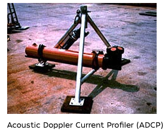
Scientists use the instrument to measure how fast water is moving across an entire water column. An ADCP (uplooking) anchored to the seafloor can measure current speed not just at the bottom, but also at equal intervals all the way up to the surface.
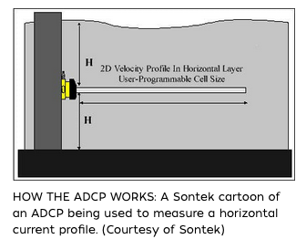
The instrument can also be mounted horizontally on seawalls or bridge pilings in rivers and canals to measure the current profile from shore to shore, and to the bottoms of ships to take constant current measurements as the boats move. In very deep areas, they can be lowered on a cable from the surface.
The ADCP measures water currents with sound, using a principle of sound waves called the Doppler effect. A sound wave has a higher frequency, or pitch, when it moves to you than when it moves away. You hear the Doppler effect in action when a car speeds past with a characteristic building of sound that fades when the car passes.
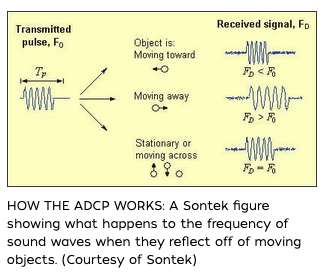
The ADCP works by transmitting “pings” of sound at a constant frequency into the water. (The pings are so highly pitched that humans and even dolphins can’t hear them.) As the sound waves travel, they ricochet off particles suspended in the moving water, and reflect back to the instrument. Due to the Doppler effect, sound waves bounced back from a particle moving away from the profiler have a slightly lowered frequency when they return. Particles moving toward the instrument send back higher frequency waves. The difference in frequency between the waves the profiler sends out and the waves it receives is called the Doppler shift. The instrument uses this shift to calculate how fast the particle and the water around it are moving.
Sound waves that hit particles far from the profiler take longer to come back than waves that strike close by. By measuring the time it takes for the waves to bounce back and the Doppler shift, the profiler can measure current speed at many different depths with each series of pings.
Note
Acoustic Doppler Current Profilers (ADCPs) provide direct measurements of flow velocity across a cross-section, in contrast to traditional stage-based methods, where water surface elevation (stage) is recorded continuously and discharge is inferred using a pre-established stage–discharge rating curve. Both approaches are widely used in streamflow monitoring. While stage data remain essential—at minimum—to define cross-sectional geometry and support rating curve development, continuous velocity profiling is less commonly implemented due to cost and deployment complexity. However, advances in sensor technology and data telemetry are rapidly increasing the feasibility of high-frequency, velocity-based discharge monitoring at both permanent and temporary sites.
Single-point velocity measurement in an open channel can be done using a Doppler flow meter that measures particle velocity at a specific point, or by using the “six-tenths method” with a flow meter where a single reading is taken at 60% of the water depth. For large channels, taking multiple measurements at different depths is more accurate for calculating the overall flow rate, but the six-tenths method is a common way to estimate the average velocity at a single vertical location. Doppler flow meters
The “six-tenths” method
Principle: This method assumes that the average vertical velocity in an open channel occurs at a specific depth.
Procedure:
Determine the total flow depth of the channel.
Place a ADCP at a single vertical station.
Take a single velocity measurement at 60% of the total depth, measured down from the water surface.
This single measurement is used as the average velocity for that vertical section.
Application: This is a common and practical method used by organizations like the U.S. Geological Survey (USGS) to estimate average velocity in a single vertical when a full cross-section velocity survey is not feasible.
Weirs#
Used as flow measuring devices and to maintain specific pool elevations in hydraulic systems.
Flow Measurement#
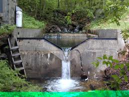
The weir forces flow to pass through critical depth where there is a one-to-one relationship between depth and discharge.
Broad-Crested Weir#
A broad crested weir is distinct from the sharp edged wiers by virtue of having a substantial portion of the crest in the direction of flow of at least several approach depth equivalents.
The wier below is nearly flooded, but yopu can see the crest length relative to the approach depth, the central “channel” is a notch in the system for lower flows/pool elevations.
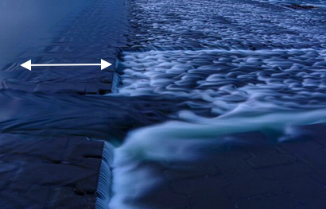
The weir below is clearly either a flow measuring weir or a debris trap - the notch is to guarentee enough flow to scour the trap after a substantial solids flow event. The “crest” is pretty long (in the direction of flow) no doubt to withstand the shear forces that would be imparted by a slurry (water and solids) impacting the upstream face. Notice the geometry - it is a notch-type weir with at least three notches. The small width portion. The wider portion near at elevation a little below the gaging vault (or prison cell), and a widest portion using the gaging vault as part of the vertical wall of the notch. This kind of weir is called acomposite-geometry weir.
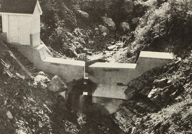
The next two images show a broad crested weir set into a trapezoidal channel, first just after construction waiting for the concrete to harden,
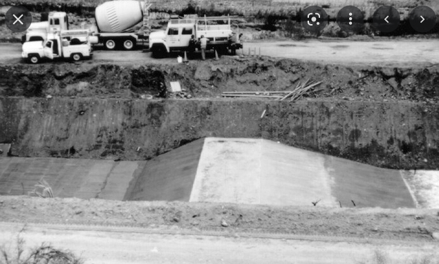
and then with water flowing in the weir.
Notice the two hydrographers admiring the weir and awaiting their chance to fish in the newly constructed fish race.
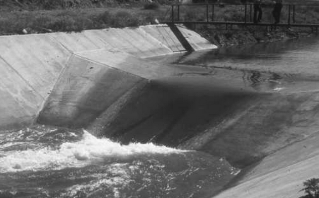
The sketch below shows the geometry of a broad crested weir, the width of the weir across the channel is \(L\) whereas the length of the weir in the direction of flow is \(I\) in the drawing.
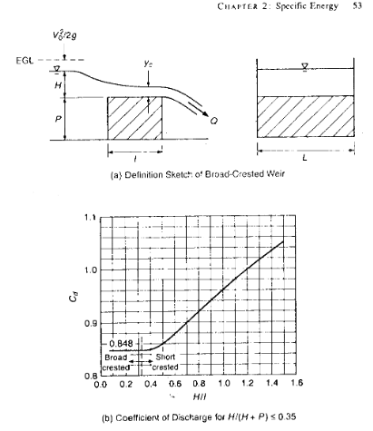
Key points in the broad crested weir are that the crest is long enough so that parallel flow and critical depth occur somewhere along the crest.
The critical energy at this location is
The discharge equation is
The typical discharge coefficient \(C_d\) is 0.848, but increases as the weir “floods” as indicated by the chart above that relates \(C_d\) to the depth to crest length ratio. A flooded weir is called “submerged” and Sturm pages 48-50 have a nice discussion regarding submerged weirs if flow measurement is the goal.
The gist of the pages is a submergence correction for discharge as
The equation above is essentially eqn 2.52 in Sturm with the constants for a broad-crested weir.
Flumes#
A flume is another device to measure flow in open channels. A flume employs contractions and/or a raised bottom section to force flow through critical depth within the measurement section of the flume. A rating curve is provided by manufacturers or if the geometry is known in the critical sectionthat fact can be leveraged to rate the flume.
Flumes can be pretty small
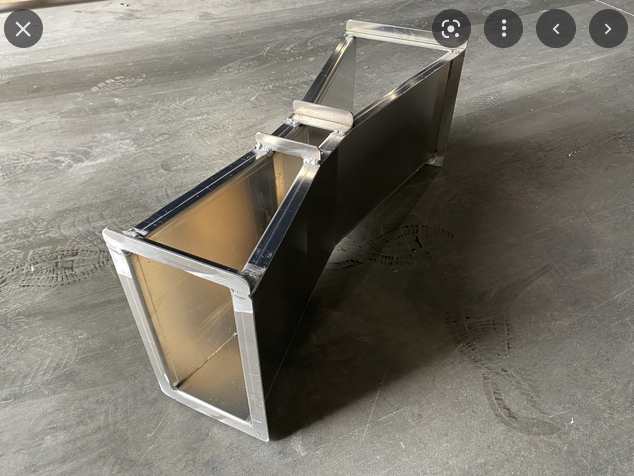
Moderate in size
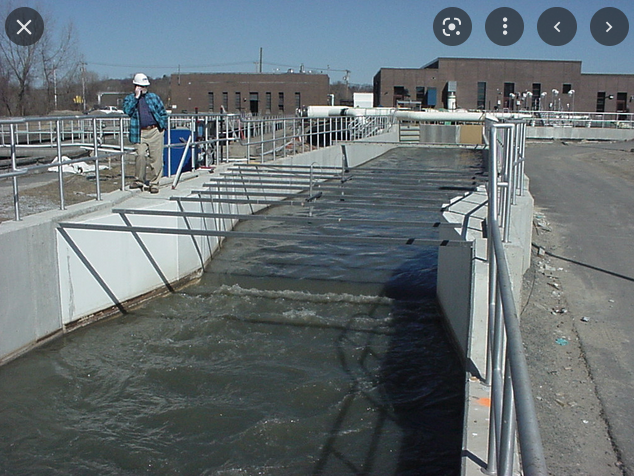
or even pretty large.
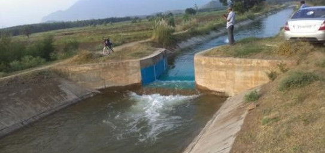
Laboratory Apparatus#
The apparatus is a recirculating water flume (photo below), width 1 ft, comprising a supply tank (in the flumw base) a head tank, two pumps, rectangular channel with side rails, depth gauges, total head tubes, bed tappings and downstream control gate.
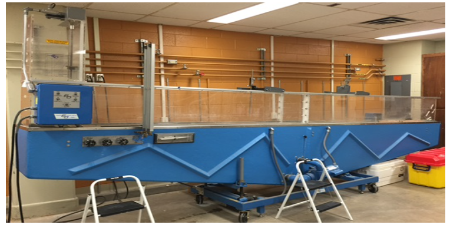
Objective#
The laboratory objective is to measure depth and flow in a flume using different devices,
Discharge Measurements#
The flowrate is determined by various field-portable methods:
Drift tracers (floating objects, measure time-of-travel over measured distance)
Weirs
Flowtracker (ADCP)
Flow Depth Measurements#
Flow depth measurements are made using a digital distance gage (a ruler widda digital readout) if the battery is dead, you will still use the device but make manual measurements using a ruler from different device settings. Using a V-notch weir as an example, the relationship between weir crest height, water height above the weir, and the total depth are shown in the figure below.
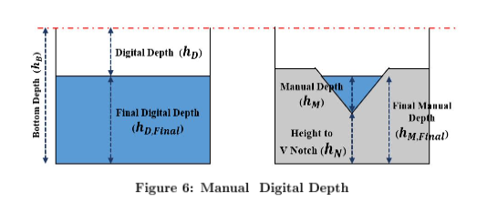
The digital device reports distance from the rail top to the pointer setting (\(h_D\), in our case depth to water. The total depth of the channel is \(h_b\) = 44 mm (students need to verify!). The flow depth is the difference in these readings.
A second reading is made when the V-notch weir is in place. It is used to check the pump flow calibration (it needs to be removed to create a stable hydraulic jump.
Laboratory Procedure#
Drift Tracer#
A floating tracer is used to estimate the mean flow velocity in the flume by measuring the time required for the tracer to travel a known distance between two marked stations. Repeated measurements are used to reduce random timing error and obtain a representative average velocity.
Preparation (Instructor/TA)
Flume tailgate down.
Put tracer catch screen over tailwater hole.
Set positive slope (1-5 % should be adequate)
Set laser-level in place, adjust to intersect flume at known station downstream.
Update stationing on flume (use black marker).
Set depth gage, verify functional, change batteries if needed, provide instructions on zeroing the gage, suggest mid-depth datum (esp. if weir in-place).
Open red valves (usually left full open, verify).
Start pumps.
Adjust head gate as needed, if a weir is in place some adjustment is likely needed.
Measurement(s) (Student)
Be sure system is at equilibrium (observe several minutes to be sure waterlevels appear to be unchanging)
Identify tracer start/stop positions; label using red dry-erase marker.
Use tape measure and laser level to determine slope. Verify with slope-level indicator as an independent check.
Use depth logger to measure flow depth at start, stop, and midway between these positions, record these values.
Using a stopwatch drop a tracer ball upstream of the start position. Start timing when the tracer passes the start position, stop when it passes the stop position. Repeat 10 times (10 time-of-flight values).
Turn off Pump 2.
Repeat steps 3 and 4 above.
Restart Pump 2 (or turn off system as directed by Instructor/TA
The mean surface velocity is estimated from the tracer travel time using
\(𝑉=\frac{𝐿}{t}\),
where
\(L\) is the distance between measurement stations and \(t\) is the recorded time-of-flight of the tracer.
Because the tracer floats on the water surface, the measured velocity represents a surface velocity, which is generally greater than the depth-averaged velocity due to friction at the channel bed and walls. Students are encouraged to consult online references—such as guidance from the U.S. Geological Survey on float or drift velocity measurements—to understand how surface velocities are related to mean channel velocities.
Weir#
A weir is a flow-measuring structure that relates discharge to the upstream water level above a fixed crest. By measuring the head above the crest and applying a calibrated discharge equation, the flow rate in the flume can be estimated for several common weir geometries such as V-notch and sharp-crested weirs.
For a sharp-crested weir the discharge is typically expressed in the form
\(𝑄 = 𝐶𝐻^𝑛\)
where \(𝑄\) is discharge, \(H\) is the head measured above the weir crest, and \(C\) and \(n\) are coefficients that depend on the weir geometry (for example, rectangular or V-notch).
In this experiment the upstream depth relative to the crest is measured and used with the appropriate equation to estimate discharge.
Instructor/TA Preparation
Flume tailgate down.
Install weir (V-notch, Sharp-crested (Tall), or Short Sharp-crested (Short))
Put tracer catch screen over tailwater hole (optional if no tracers are to be used).
Set positive slope (1-5 % should be adequate)
Set laser-level in place, adjust to intersect flume at known station downstream.
Update/verify stationing on flume (use black marker).
Set depth gage, verify functional, change batteries if needed, provide instructions on zeroing the gage, suggest mid-depth datum (esp. if weir in-place).
Open red valves (usually left full open, verify).
Start pumps.
Adjust head gate as needed, if a weir is in place some adjustment is likely needed.
Measurement(s) (Student)
Be sure system is at equilibrium (observe several minutes to be sure waterlevels appear to be unchanging)
Determine weir crest height, record this value
Zero the depth gage at the weir crest.
Use tape measure and laser level to determine slope. Verify with slope-level indicator as an independent check.
Use the depth gage to measure flow depth upstream of the weir. Usually there is a smoothing of the water surface as it accelerates over the weir, you want to measure at the upstream edge of this transition. If not obvious, measure a distance upstream 1-1.5 times the weir crest height. Record the values.
Turn off Pump 2.
Repeat step 5 above; measure at same location upstream of the weir.
Restart Pump 2 (or turn off system as directed by Instructor/TA
The water surface upstream of a weir is not uniform because the flow accelerates as it approaches the crest. For this reason, the head measurement should be taken sufficiently upstream of the crest where the water surface is relatively smooth and unaffected by the drawdown toward the weir. Additional background on weir flow theory and measurement practice can be found in guidance documents from the U.S. Geological Survey, including the archived references provided below:
Flowtracker#
The SonTek FlowTracker is a portable acoustic Doppler velocity meter used to measure water velocity at a point within a flow. The instrument estimates velocity by transmitting acoustic pulses and measuring the Doppler shift of sound scattered by small particles suspended in the water. When combined with depth and channel geometry measurements, point velocities can be used in a velocity–area method to estimate discharge.
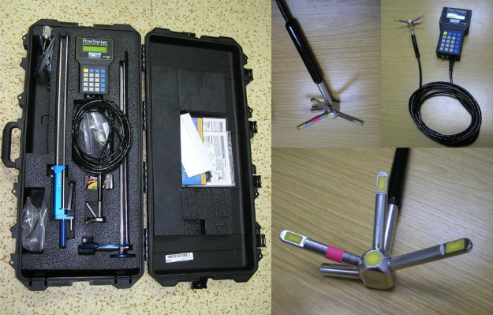
Discharge is estimated using the velocity–area relationship
\(Q=AV\)
where
\(Q\) is discharge, \(A\) is the cross-sectional flow area, and \(V\) is the average flow velocity. In practice, velocities are measured at representative depths within the flow and used to approximate the mean velocity across the cross-section.
Velocity in open-channel flow varies with depth due to friction at the channel bed and boundaries. For many field measurements, velocity observed at approximately 60 % of the flow depth below the water surface provides a reasonable estimate of the depth-averaged velocity at that vertical. Additional guidance on velocity–area discharge measurements and acoustic velocity meters can be found in publications from the U.S. Geological Survey describing standard streamflow measurement techniques.
Preparation (Instructor/TA)
Flume tailgate down.
Install weir (V-notch, Sharp-crested (Tall), or Short Sharp-crested (Short))
Put tracer catch screen over tailwater hole (optional if no tracers are to be used).
Set positive slope (1-5 % should be adequate)
Set laser-level in place, adjust to intersect flume at known station downstream.
Update/verify stationing on flume (use black marker).
Set depth gage, verify functional, change batteries if needed, provide instructions on zeroing the gage, suggest mid-depth datum (esp. if weir in-place).
Open red valves (usually left full open, verify).
Start pumps.
Adjust head gate as needed, if a weir is in place some adjustment is likely needed.
Measurement(s) (Student)
Be sure system is at equilibrium (observe several minutes to be sure waterlevels appear to be unchanging)
Locate two stations upstream of the weir, the water must be deep enough to submerge the Flowtracker sensor otherwise the instrument will report error codes.
At each station determine the 60% depth (measured down from water surface), set the sensor to that depth and make a reading. Be sure to locate the sensor centerline in plan view (middle of the flume). Record the reported Vx value, be sure the reported Vy and Vz values are small (about 1/20-th to 1/100-th of the Vx value). The datalogger will report error codes if the velocity deviation is too large, and report “why”. Repeat such measurements once; if still reporting errors the instructor will override the error so you can continue. Record the values and depths at these two stations.
Turn off Pump 2.
Repeat step 7 above; measure at same location upstream of the weir.
Restart Pump 2 (or turn off system as directed by Instructor/TA)
Stage-Area#
Warning
This sub-section is under construction, and is left for future semesters
Words
Preparation (Instructor/TA)
Flume tailgate down.
Install weir (V-notch, Sharp-crested (Tall), or Short Sharp-crested (Short))
Put tracer catch screen over tailwater hole (optional if no tracers are to be used).
Set positive slope (1-5 % should be adequate)
Set laser-level in place, adjust to intersect flume at known station downstream.
Update/verify stationing on flume (use black marker).
Set depth gage, verify functional, change batteries if needed, provide instructions on zeroing the gage, suggest mid-depth datum (esp. if weir in-place).
Open red valves (usually left full open, verify).
Start pumps.
Adjust head gate as needed, if a weir is in place some adjustment is likely needed.
Measurement(s) (Student)
Be sure system is at equilibrium (observe several minutes to be sure waterlevels appear to be unchanging)
Locate two stations upstream of the weir, the water must be deep enough to submerge the Flowtracker sensor otherwise the instrument will report error codes.
Deliverables#
Laboratory Report